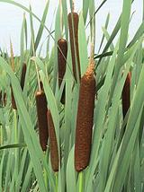
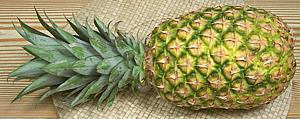
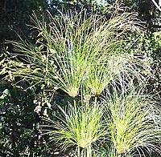

Magnolias

SAFARI
Users
Cattails
 [Typha latifolia (Common Cattail, Broadleaf Cattail) | Typha angustifolia (Narrowleaf Cattail) | other species of genus Typha in family Typhaceae]
Cattails inhabit wetlands all the world around, and can be difficult
to control invasives. All parts of Cattail plants are edible, if
harvested at the right stage of maturity. Cattails now have their own
Cattails page.
Photo of T. latifolia by AnRo0002 distributed under license
Creative Commons
CC0 1.0 Universal Public Domain Dedication.
Bromeliads
 [Family Bromeliaceae]
Bromeliads are a large family of 3168 or more species. They are very
well known for spectacular decoratives, and the leaves are an important
source of fiber in their region. Only one species is of significant
culinary (and economic) interest - very significant, actually.
Bromeliads are native to the tropical Americas, and into the subtropical
zone. Bormeliads now have their own
Bromeliads page.
Grasses & Grains
|
[Family Poaceae]
Though most grasses are themselves too fibrous to eat, and many are somewhat toxic, their seeds are the primary food for most of humanity. We divide Grasses into these topical pages:
|
Sedges
 [Family Cyperaceae)]
Sedges are a large family of aquatic or semi-aquatic herbs related to Rushes and Cattails, but only a very few are used for food. Papyrus, however, was once very important for writing down recipes, and the stem pith of young plants was also eaten, raw or cooked. Today, the Water Chestnut is the best known culinary sedge. Sedges now have their own Sedges page.